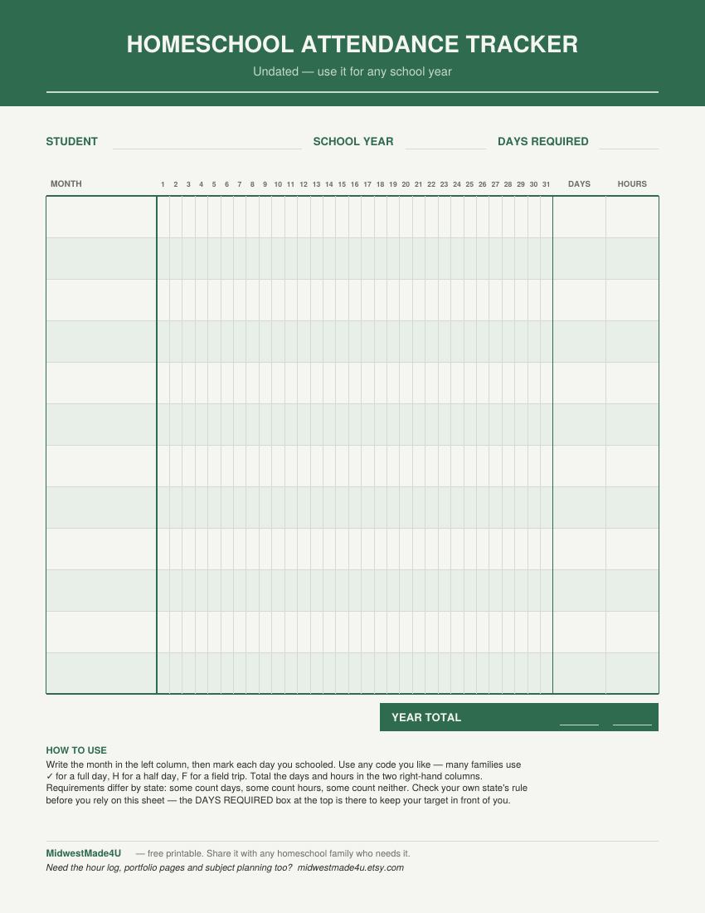

A whole school year on one page. Undated, so it works for any year.
The printable is for pen and paper. The fillable one lets you type straight into the grid on a computer or tablet and save it as you go.
Attendance rules differ from state to state. Some count days, some count instructional hours, and some ask for neither. This sheet is built to record either one, but it is a record-keeping tool and not legal guidance — check your own state's requirement before you rely on it.

This sheet came out of a larger planner. The full version adds an hour log, portfolio pages, reading records and subject planning — 478 undated pages, printable and fillable, and it never expires.
Instant download. The tracker above stays free either way.